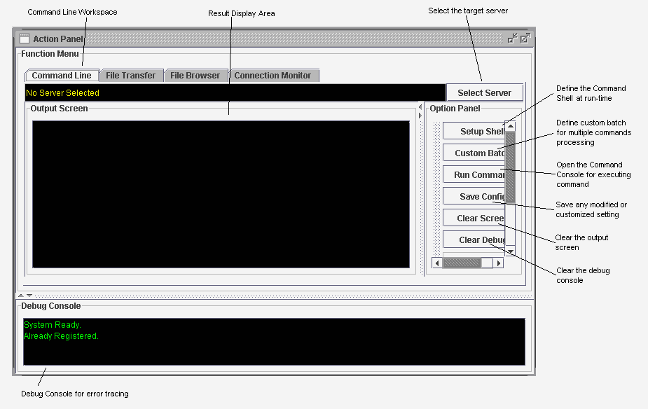

For example, you may need to execute a set of commands/scripts periodically on various managed servers. RMIAdmin helps to streamline the overall procedures by means of pre-defining of batch job.
Let's take a look on this scenario.
Each day you need to perform the following commands in sequence:
- net time \\a_time_server /yes (to syncronize the time with a time server)
- type c:\a_log_file (to view the contect of a log file e.g. Backup Log)
- del c:\obsoleted_files (to purge some obsoleted files/folders for housekeeping)
For some complex batch scripting (such as those with conditional processing), it is suggested to coded them into a batch (*.bat) or shell script (*.sh), then further embedded them in the "Custom Batch" of RMIAdmin.
The "Custom Batch" feature support Multi-Threading technology, so you don't have to wait until all the commands in the batch is completed before you could retrieve the output, since RMIAdmin will assist you to retrieve the output at remote computer in nearly real-time.
-
Select "Tools" -> "Command Line", this will brings you to the Command Line Workspace.
 - Choose your target server to operate by clicking the "Select Server" button.
-
All the managed server will be loaded into a list box, simply choose your preferred
server, and click "OK" to continue.

-
Next click the "Custom Batch" button, this will open up the "Batch Manager" window,
where you could define you own batch job.

Create new Batch
- Click the "Create" button, this will open a window for defining new batch.
- Enter any preferred name for easy identification of the batch in the "Name" field.
-
Input all the commands one-by-one in separate line.
- Click "Create" to set the new batch, click "Clear" to purge all the input values.
Modify existing Batch
- Click the "Modify" button, this will open a window which load the initial value of the batch.
-
Perform your update.
- Click "Save" to apply the new settings, click "Reset" to abort the changes and reset all the values.
Delete obsoleted Batch
- Select the target Batch to be deleted, then click the "Delete" button.
- This will immediately dispose the selected Batch from the screen.
Execute the Batch
- Select the target Batch, then click the "Execute" button.
- The instruction will then be executed remotely, and the result will be displayed on the "Output Screen". * Note that the current version of RMIAdmin does not allow you to assign different shell environment to various defined batch job.
Save the defined Batch Jobs
- From the "Option Panel" of the Command Line Workspace, click the "Save Setting" button.
- This will save all the defined Batch Jobs to the current server.
- A message will be prompted upon completion.
Related Topics:
|
|
Copyright 2005 © RMIAdmin. All rights reserved. |